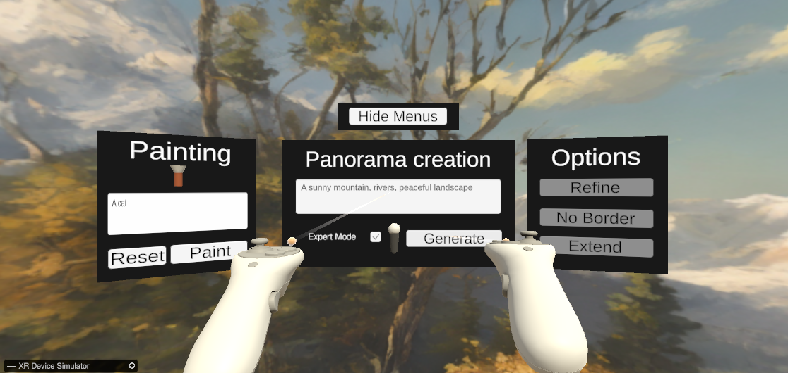

VR Environment creation by Generative AI, Unity client
This Unity project is a client for generating, modifying and exploring environments generated by AI from voice prompts.

It features two main scenes, one for desktop and one for virtual reality, that both let you explore new worlds. The idea of this project is to let you access all the AI features from an application, reducing the interruptions in the creation process.
The project was developed at the Fondation Campus Biotech Geneva (GitHub), in collaboration with the Laboratory of Cognitive Science (part of EPLF).
Installation
The installation is simple, as we use standard Unity features. Here is the detailed guide.
- Download Unity Editor 2022.3.36+.
- Open the project and you should be able to use scenes, without the AI features.
Most VR headsets compatible with OpenXR should work out of the box. The project was developed with the HP Reverb G2 (a Windows Mixed Reality Headset).
- If the XR assets do not work, you can try to reinstall them from the Package Manager (Package manager -> XR Interaction Toolkit -> Samples -> Starter Assets -> Reimport).
- For Windows Mixed Reality Headsets, you may also try to reimport the plugins.
Important
This is only the client, you need a running server to actually use the AI features! The repository to run the server can be found at: VR-Environment-GenAI-Server.
Usage
This Unity project features a scene generated by an AI from a text prompt. The scene is dynamically created based on the input text and allows for unique and creative environments to be generated.
To generate a scene:
- Start the Python server, and edit the configuration if necessary.
- Load the desired scene. On desktop load the "Desktop Creator" scene, and the "VR Creator" scene in VR.
- Enter a text prompt in the input field. In VR you can speak while holding the microphone.
- Press the "Generate" button.
- Watch as the AI creates a scene based on your text prompt. A progress bar indicates the remaining time.
Configuration
You may need to set a few configuration parameters for a smooth experience.
Most configuration parameters are under Assets/Configurations/api.json.
In case you are running the project locally VR and AI on the same computer (the "debug" configuration), you should set the following.
pythonFallbackApiFile: file path to the Pythonapi.jsonfile, this file should be in the root folder of the Python project.
If you want to connect to a remote server, the important features to set:
serverDefaultIp: the IP to reach the AI server (IPv4 preferred).serverDefaultPort: server default port number.
Note: if both the server and the fallback api file are correctly specified, the server will be ignored and the connection will be local. You can replace the fallback api file path by any wrong path to prevent this behavior.
Some options are considered legacy and where used for communication on the same file storage. You can specify where Python should save the files, temporary locations are better.
audioPath: the path to the temporary audio file to save when using the speech-to-text feature.baseImage: the path to the texture that will be modified.maskPath: the path to the temporary mask texture that is used during the inpainting feature.
Features
The main features of this project are:
- Text-to-Skybox generation.
- Speech-to-text: speak naturally.
- Mask drawing and inpainting: freely select and redraw elements.
Scenes
All the following scenes are in the Assets/Scenes folder.
- "Desktop Creator" - Main scene for skybox creation in desktop mode.
- "VR Creator" - Skybox creation with a VR headset. You can also use it when no headset is plugged in, but this is much of a debug feature.
The other scenes are for testing pruposes:
- "Speech Recognition" - A simple scene that only integrates speech-to-text.
- "Experiments Scene" - A scene containing various legacy experiments.
Documentation
We provide an online documentation, you can also access it in the documentation branch, under docs/.
The documentation is generated with DocFX, you can regenerate it with DocFX.
cp README.md Documentation/index.md
# Option 1: Offline, static documentation
docfx Documentation/docfx.json -t statictoc,custom_template
# Option 2: on a web server
docfx Documentation/docfx.json
Both commands will generate a documentation under docs/.
Legacy features
Skybox Import
This project allows for the import of custom skyboxes.
The skybox is automatically imported into the scene when the player hits enter.
Launch the scene:
- Maintain left click to start drawing.
- Use the scroll wheel to change the radius of the drawing area.
- Use right click to save the mask. It is saved in "Assets/Temp/mask.png" by default.
Breathing Experiment for Meditation
As a small bonus feature, this project includes a small breathing experiment for meditation.
To start the breathing experiment:
- Enable the breathing asset.
- Press the space bar on in-breathing and release on out-breath.
Links
You can find the project at the following locations.
- Official public repository: https://github.com/fcbg-hnp-vr/VR-Environment-GenAI-Unity
- Active public repository: https://github.com/HugoFara/VR-Environment-GenAI-Unity
- Original private repository: https://gitlab.com/fcbg-hnp-vr/2024/interne/ai-world-generation/vr-viewer
For the official public AI server: https://github.com/fcbg-hnp-vr/VR-Environment-GenAI-Server.